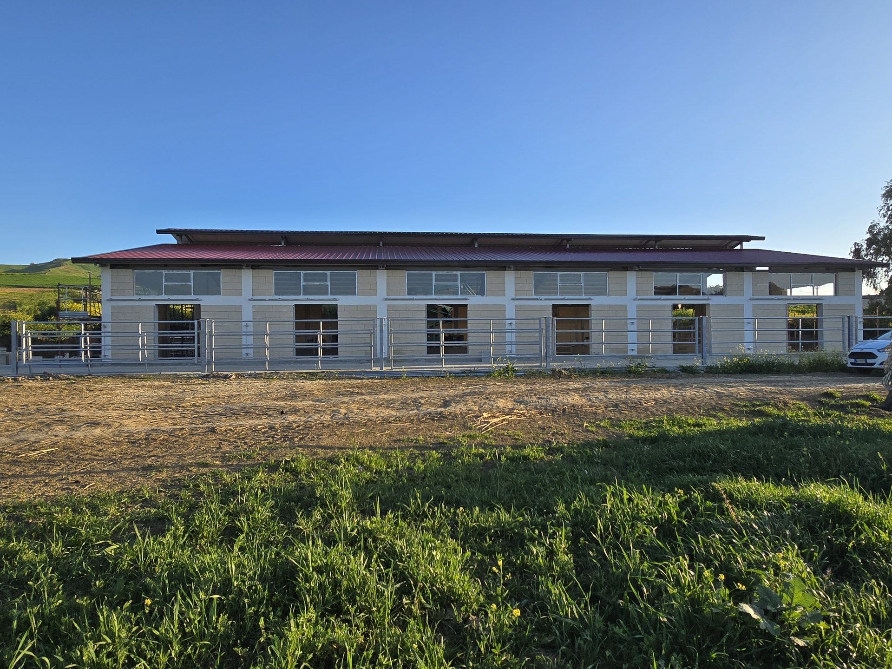
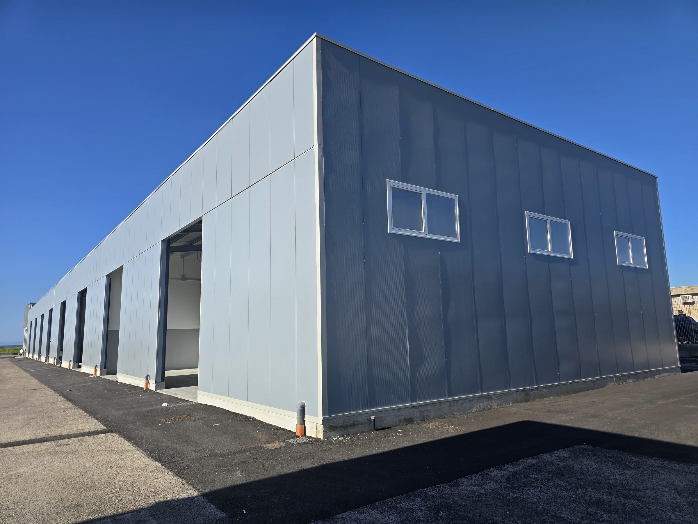
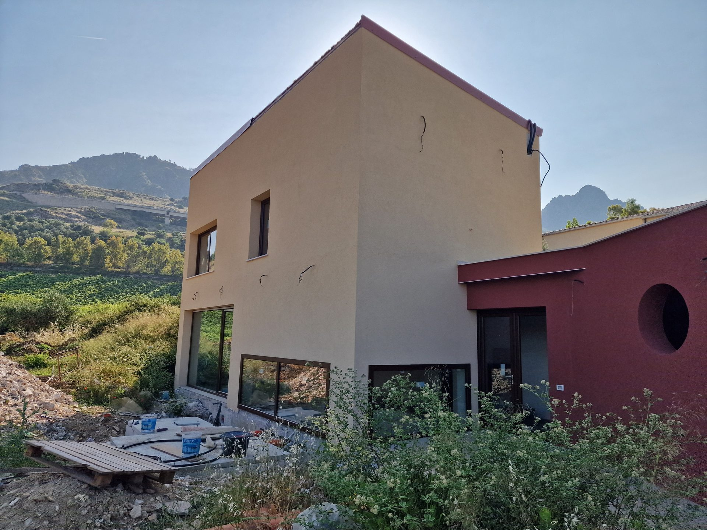
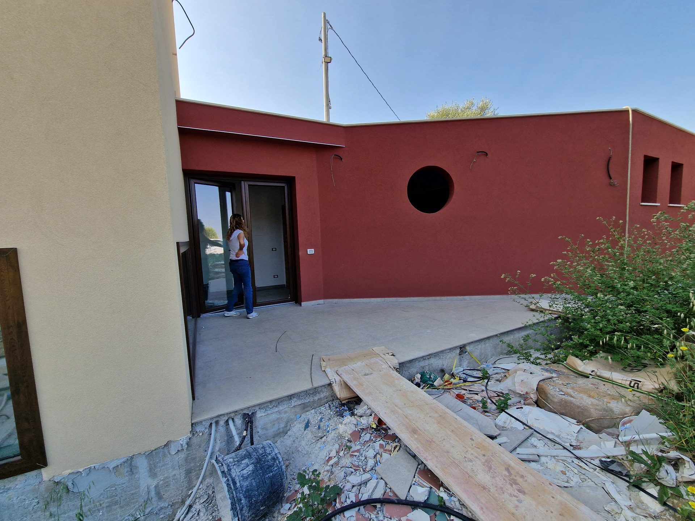
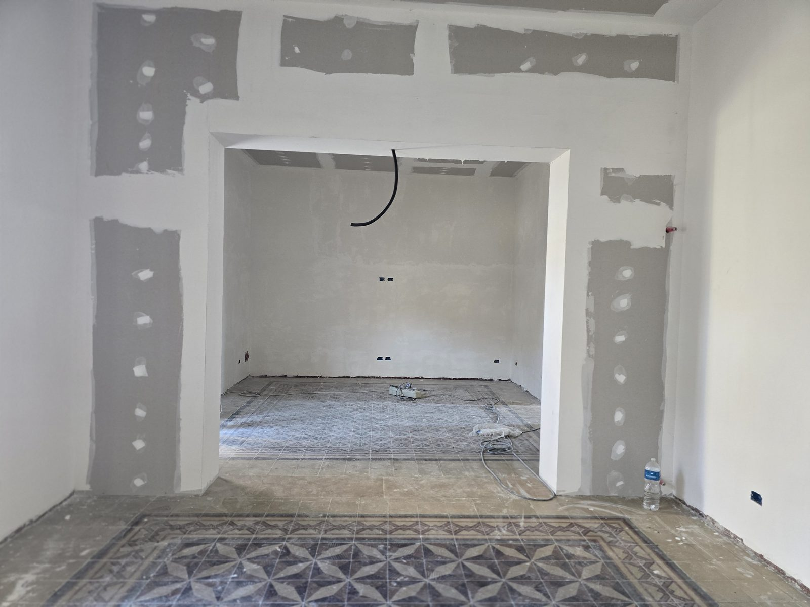
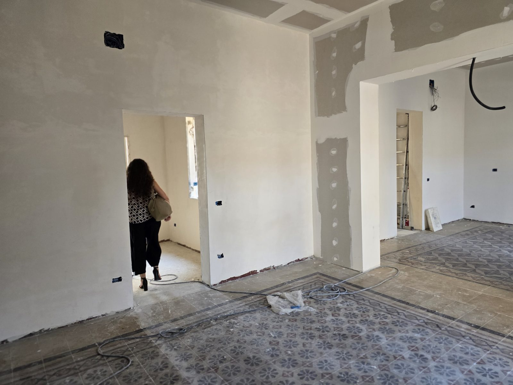
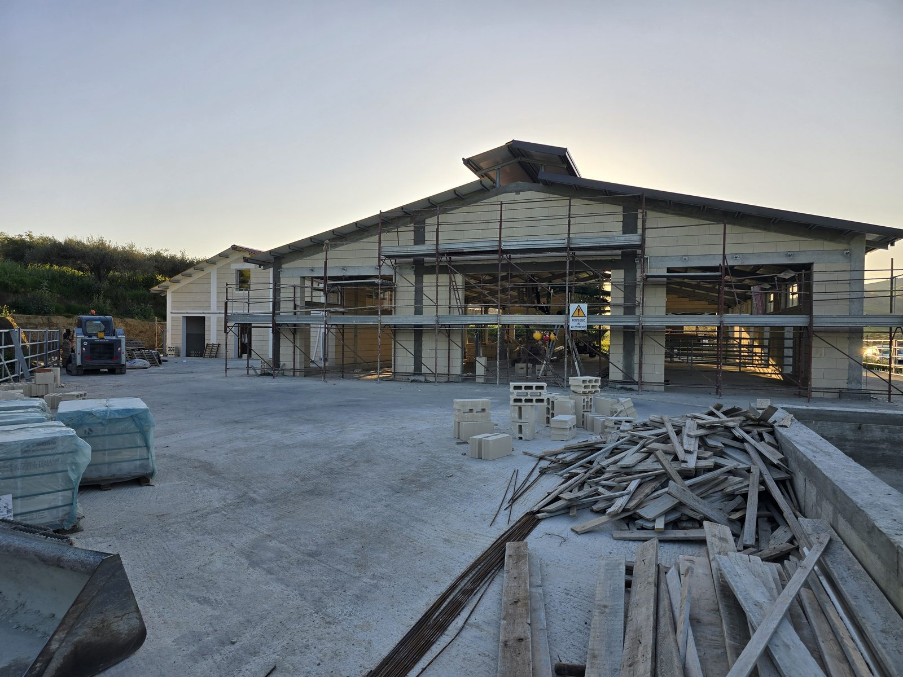
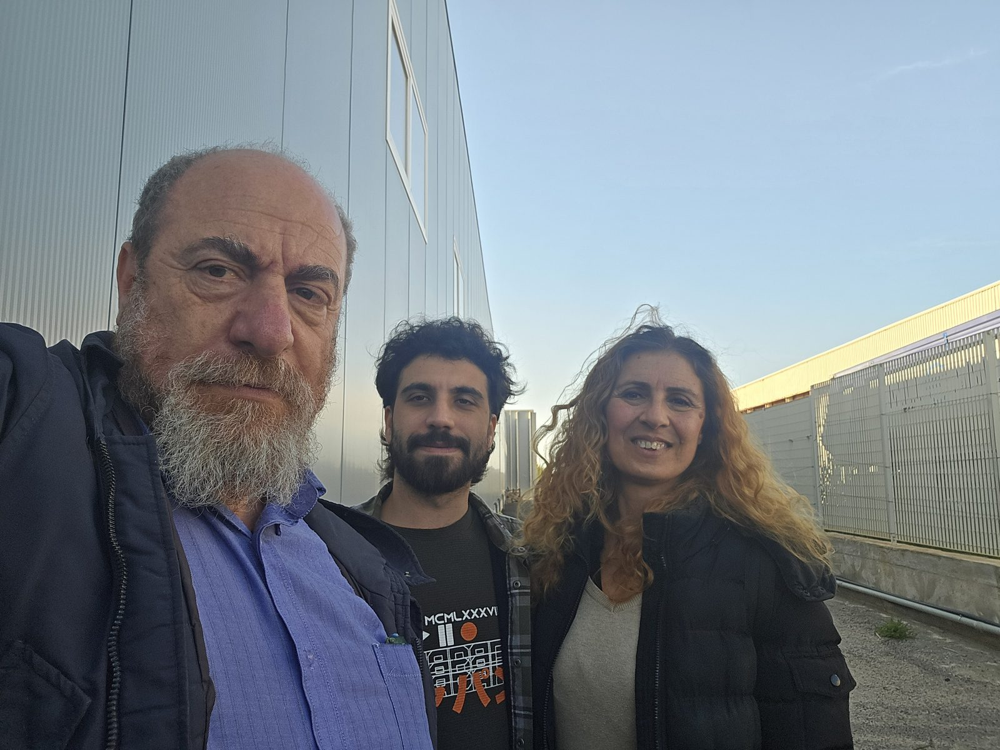

Stalla in acciaio
- Tipo
- Capannone zootecnico
- Anno
- 2025
- Stato
- Completata

Architettura · Strutture · Pratiche — Sicilia
Progettiamo edifici che stanno in piedi da soli:
la bellezza viene dopo la precisione, mai prima.
Capannone industriale — 2025
Quello che abbiamo costruito, fotografato com'è.



Il durante. Dove si vede se un progetto tiene.


Le cementine restano, il resto si rifà.
Misurare due volte, tagliare una.


Studio Atomoprogetti è lo studio dell'Arch. Michelangelo Bartolotta. Base a Palermo, cantieri in tutta la Sicilia: progettazione architettonica, direzione dei lavori, pratiche edilizie e catastali.
Seguiamo l'opera dal primo rilievo all'ultima consegna — preferiamo i cantieri alle parole.